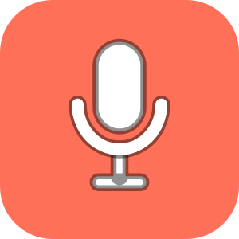
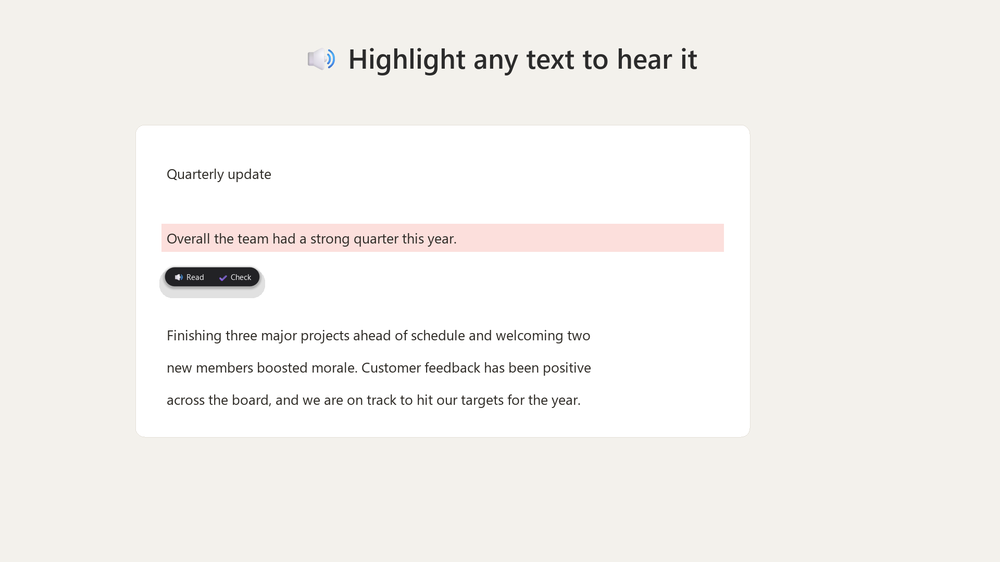
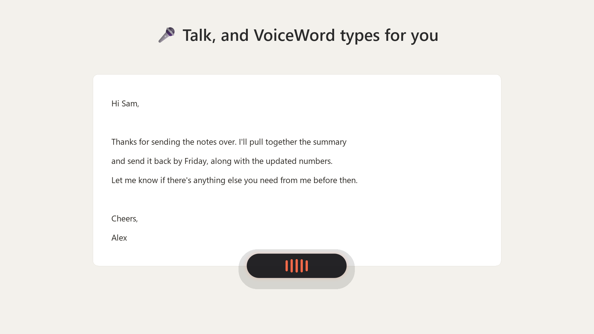
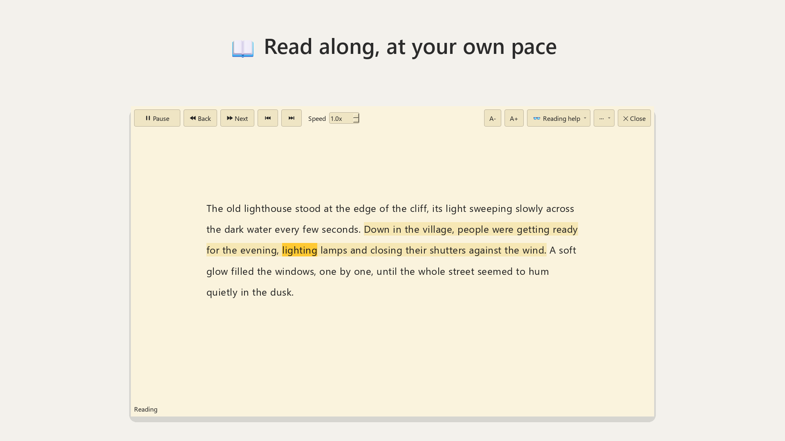
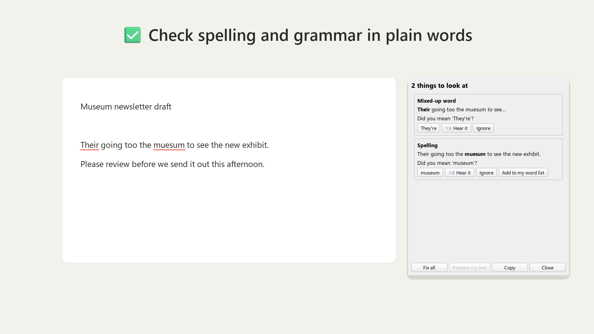

Speak, and it's typed for you
Hold a key, or click the microphone, and say what you want to write. Let go, and your words appear where your cursor is, with punctuation. Say "scratch that" to take it back.

VoiceWordWhy only read and type when your PC can listen and talk too? VoiceWord is a free Windows app that types what you say, reads text out loud, and checks your writing, in any app.
Being tested with a small group for now. Free. Windows 10 and 11. No account, no ads.

In email, documents, web pages and chat. VoiceWord sits quietly near the clock until you need it.
Hold a key, or click the microphone, and say what you want to write. Let go, and your words appear where your cursor is, with punctuation. Say "scratch that" to take it back.

Highlight a word, a paragraph or a whole page and click the speaker. Follow along as each word lights up. Pause, go back, change the speed and pick a voice you like.

Check what you've written before you send it. Words people often mix up, like their and they're, are explained simply, and you can hear each suggestion read out.

Switch these on in Settings, under Tools. Everything works with the mouse alone, and every VoiceWord window can read itself out loud.
Speech, reading and checking all happen on your own computer. Nothing you say, type or hear is sent anywhere.
No sign-in, no ads and no analytics. VoiceWord only goes online to download its parts and check for updates.
If something goes wrong, VoiceWord can send a problem report, but only when you click Send, and only technical details.
Read the full privacy policy. Using VoiceWord at work? There's a page for IT teams.
“I'm an engineer, but reading, writing and typing were never my strong suits. I don't think anyone should be held back by the things they find hard. VoiceWord takes that limit away, so everyone gets an equal chance to learn and do more with their PC. I made it to help myself, and if it can help others too, why not?”
VoiceWord is being tested with a small group. Leave your name and email, and Carly will send you an invitation to get it from the Microsoft Store.
VoiceWord is free. If it helps you, you can support it on Ko-fi. Questions or ideas: voicewordapp@gmail.com